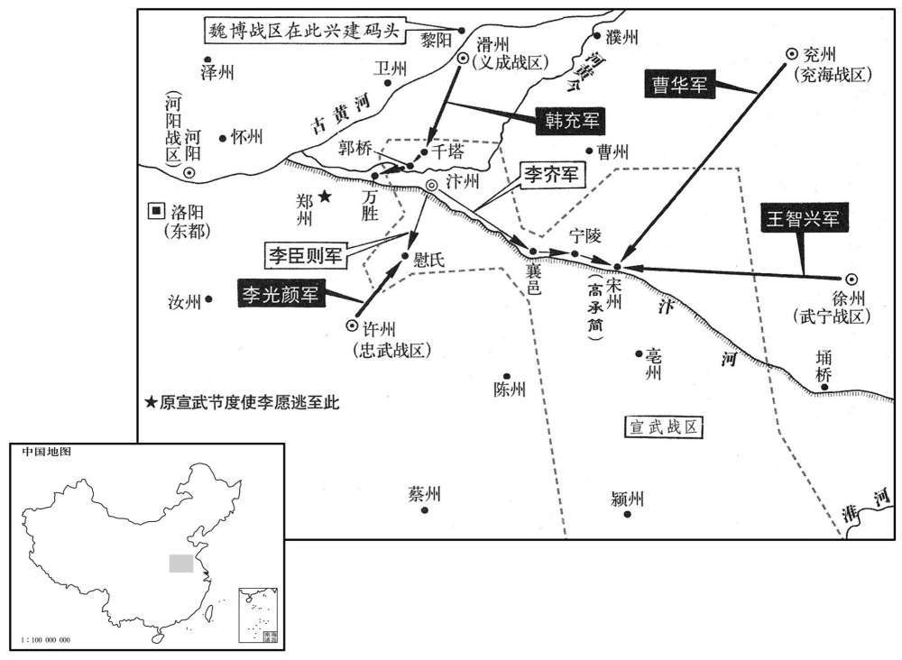

公元822年资治通鉴：本年记事、原文与白话对照
按原书编年位置阅读；追叙和史论不等于本年发生的事件。白话采用所据译本，缺译不以生成译文补齐。
卷242 · 本年记事
公元822年 · 唐穆宗睿圣文惠孝皇帝长庆二年
二年〔（壬寅、八二二）〕
上传原文的注释括号有异常，字符原样保留；无法可靠划分的段落默认全文显示。
本年事件索引（现代整理）
- 幽州兵攻陷弓高，白居易上疏批评讨伐军务失当
- 成德军劫掠度支运往下博的六百车粮食
- 魏博军在田布率领下讨伐成德，因粮乏与史宪诚煽动而溃散
- 田布召集诸将议战受拒，作遗表后自杀，史宪诚接任魏博
- 穆宗任王日简为横海节度使并贬杜叔良
- 王庭凑围困深州牛元翼，穆宗授予成德节钺并派韩愈宣慰
- 萧俛、段文昌曾主张裁兵，穆宗初政优容军将致军纪败坏
- 崔植、杜元颖处置河北叛乱失当，河朔藩镇复叛
- 朱克融受节度旌节后释放张弘靖、卢士玫
- 穆宗任牛元翼为山南东道节度使，奖赏坚守的博良弼、李寰
- 穆宗赐王日简姓名李全略
- 穆宗罢崔植为刑部尚书，任元稹为同平章事
- 穆宗加李光颜兼领横海、沧景等职
- 王庭凑虽获节钺仍围深州，穆宗任冯宿为留后
- 元稹劝穆宗罢兵，裴度改任司空、东都留守
- 穆宗任李听为河东节度使
- 刘承偕倚仗拥立穆宗之功擅权，刘悟囚禁但未杀他
- 穆宗在东宫时已听闻天下厌苦宪宗用兵，即位后优待军将
- 王智兴率武宁精兵入徐州，劫掠盐铁院及商旅财物
- 穆宗加朱克融、王庭凑检校工部尚书
- 韩愈亲赴成德宣慰王庭凑，促其解深州之围
- 裴度入朝陈说刘承偕罪状，穆宗不忍处死
- 李光颜军士闻将留沧景后哗变西归，李光颜请辞获准
- 穆宗任裴度为淮南节度使
- 穆宗加刘悟检校司徒，刘悟渐生骄横
- 回鹘请求出兵协助讨幽镇，朝廷拒绝后遣回
- 王智兴遣轻兵袭取濠州，刺史侯弘度弃城
- 穆宗留裴度辅政，改任王播镇淮南
- 李寰率众突围出博野，击退成德追兵
- 穆宗以无力讨伐徐州为由任王智兴为武宁节度使
- 穆宗复任李全略为横海节度使
- 四月朔发生日食
- 穆宗任博良弼、李寰为神策都知兵马使
- 张平叔上奏提出多项官府专卖盐的办法
- 韩愈反对令吏员挨户卖盐及以盐利考核官员
- 韦处厚反对让宰相兼管盐务，张平叔变法议遂寝
- 张平叔请求追征旧欠，李渤奏请免除江州三十六年前欠税获准
- 邕州人不愿隶属容管，李元宗出走投奔黄洞
- 裴度揭发元稹、于方借机谋害自己的阴谋
- 朱克融进献马匹羊只并请按价犒赏
- 三司查办于方刺杀裴度案无据，裴度、元稹一并罢相
- 党项寇灵州并在渭北掠取官马
- 谏官请求恢复裴度相位，穆宗削去元稹长春宫使职
- 吐蕃寇灵武
- 盐州奏报党项都督拔跋万诚请降
- 吐蕃寇盐州
- 穆宗复置邕管经略使
- 宣武军兵变，李愿出逃，乱兵拥立李硴
- 宋王李结薨
- 宣武监军奏报兵乱，李硴自称权知留后
- 穆宗命两省官及宰相商议汴州处置，采纳李逢吉建议
- 穆宗贬李愿，召李硴入朝，李硴拒绝奉诏并攻陷数县
- 刘元鼎出使吐蕃会盟后还朝
- 韩充入汴境驻军，联合王智兴、高承简击败宣武军
- 李硴病重后李质擒杀李硴并处置其党
- 李质罢停牙兵日给酒食，迎接韩充入汴
- 穆宗任韩充为宣武节度使，曹华、高承简分镇诸州
- 韩充清理宣武军中恶卒千余人，军政稳定
- 浙西将领王国清兵变被窦易直讨平
- 李景略密令军士杀王稷并掠其家财
- 史宪诚闻李硴死后改变态度，向宣慰使韦文恪称臣
- 穆宗与皇太后先后幸华清宫，穆宗游猎骊山
- 集王李缃薨
- 穆宗击球坠马后中风，朝臣请立太子，穆宗立景王湛为太子
- 朝廷开始施行《宣明历》

本年形势与背景参考图
春，正月，丁酉，幽州兵陷弓高。先是，弓高守备甚严，〔弓高县，宋朝为永静军地。先，悉荐翻。〕有中使夜至，守将不内，旦，乃得入，中使大诟怒。〔诟，许候翻，又古候翻。〕贼谍知之，〔谍，达协翻。〕他日，伪遗人为中使，投夜至城下，守将遽内之；贼众随之，遂陷弓高。〔史言唐宦者陵轹守御捍敌之臣，使之失守。〕又围下博。中书舍人白居易上言，以为：「自幽、镇逆命，朝廷征诸道兵，计十七八万，〔考异曰：白集作「七八十万」，计无比数，恐是十七八万误耳！〕四面攻围，已踰半年，王师无功，贼势犹盛。弓高既陷粮道不通，下博、深州，饥穷日急。〔深州西南皆逼于王庭凑，惟恃弓高以通横海之餫。弓高既陷，粮道遂梗。九域志：弓高，东至沧州一百二十里，西北至深州二百里。〕盖由节将太众，其心不齐，莫肯率先，递相顾望。又，朝廷赏罚，近日不行，未立功者或己拜官，已败者不闻得罪；〔，女六翻。〕既无惩劝，以至迁延，若不改张，〔改张，犹更张也。董仲舒曰：譬如琴瑟不调，必改弦而更张之，乃可鼓也。〕必无所望。请令李光颜将诸道劲兵约三四万人从东速进，开弓高粮路，〔【章：十二行本「路」下有「合下博诸军」五字；乙十一行本同；退齐校同。】〕解深、邢重围，〔「深邢」当作「深作」。重，直龙翻。〕与元翼合势。令裴度将太原全军兼招谆讨旧职，西面压境，〔压镇州之境。〕观衅而动。若乘虚得便，即令同力翦除；若战胜贼穷，亦许受降纳款。〔降，户江翻。〕如此，则夹攻以分其力，招谕以动其心，必未及诛夷，自生变故。〔谓贼之麾下将有诛逆而效顺者。〕又请诏光频选诸道兵精锐者留之，其余不可用者悉遣归本道，自守土疆。盖兵多而不精，逗唯虚费衣粮，兼恐挠败军陈故也。〔挠，奴巧翻。败补迈翻。陈，读日阵。〕今既祗留东、西二帅，〔谓令裴度居西，李光颜居东。〕请各置都监一人，诸道监军，一时停罢。如此，则众齐令一，必有成功。又朝廷本用田布，令报父雠，〔令报王庭凑杀弘正之雠。〕今领全师出界，供给度支，〔言仰供给于度支。〕数月已来，都不进讨，非田布固欲如此，抑有其由。闻魏博一军，屡经优赏，〔自田弘正举魏博一军归朝，其后代〔伐〕恒，平蔡，平郓，朝廷犒赏优厚。〕兵骄将富，莫肯为用。况其军一月之费，计实钱二十八万缗，若更迁廷，将何供给﹖此尤宜早令退军者也。若两道止共留兵六遇，所费无多，〔两道，谓河东、横海。〕既易支持，〔易，以豉翻。〕自然丰足。今事宜日急，其间变故远不可知。苟兵数不抽，军费不减，食既不足，众何以安！不安之中，何事不有！况有司迫于供军，百端敛率，不许即用度交阙，尽许则人心无憀。〔指言将有建中之祸而微其辞。憀，落萧翻，无憀赖也。〕自古安危皆系于此，伏乞圣虑察而念之。」疏奏，不省。〔白居易之论事，李绛之流亚欤！顾宪、穆有用不用耳。省，悉景翻。〕
春季，正月，丁酉（初五），幽州出兵攻陷弓高县城。以前，弓高守卫很严，一次，一个宦官出使弓高，半夜到达，守将根据军法条例，拒不放他入城；天明后，宦官方才进城。宦官大怒，责骂守将。幽州的探马得知此事后，报告主将。过了不久，幽州派人伪装成宦官，半夜来到弓高城下，守将即让他入城，幽州兵随后赶到，因而攻陷弓高。接着，又围攻下博县城。中书舍人白居易上书，认为：“自从幽州、镇州叛乱以来，朝廷征发诸道兵马讨伐，总计有十七八万人，四面围攻，已超过半年时间。但官军至今没有进展，贼军兵势却仍然强盛。弓高失陷后，通往前线的运粮道路无法通行，下博和深州的将士，饥饿困乏，情况日益紧急。这都是由于前线节度将领太多，反而心不齐，都不肯率先进攻，相互观望的缘故。另外，朝廷对将士的赏罚，近来也不见成效，没有立功的人有的已经授予官衔，作战失败的人却没说被朝廷惩罚。由于赏罚不明，因而将士拖延不进。若不改弦更张，胜利就没有指望了。请求陛下命李光颜率领诸道精兵三四万人从东面急速进兵，打通到弓高的粮道，以便解除敌军对深州的重重包围，和牛元翼的军队会合一起。再命裴度率领太原的全部人马，仍兼招讨使的职务，从西面压敌边境，观察敌军动静，如能乘虚得手，即令两支兵马同力讨伐，一举歼敌。如果官军节节取胜，敌军困窘，也应当许可前线将领接受敌军的投降。这样部署指挥，就可以两面夹攻，使敌人分散兵力，并通过招降来动摇对方军心。其结果，敌人尚未灭亡，内部必定发生兵变，不战自降。同时，再请陛下下诏，命李光颜从前线诸道兵士中挑选精锐者留下，其余老弱病残都遣反本道，各守故土。大凡兵多则不精，不仅虚耗国家衣物钱粮，而且也会消弱官军自身士气，导致失败。现只留李光颜、裴度两支兵马，请陛下各置都监一人，各道的监军，都予以罢除。这样，就会队伍整齐，军令统一，最后必定取得胜利。再有，朝廷命田布为魏博节度使的本意，是让他为父报仇。现在，田布率领全部兵马出境讨敌，由朝廷度支供给衣粮，但几个月以来，魏博军队从未攻讨。这并非田布按兵不动，而是有他难言的苦衷。听说魏博军队经由朝廷多次优厚的赏赐，兵士骄横，将领富有，反而不愿作战。况且委博军，每月的军费按货币折算，即达二十八万缗。如果继续拖廷下去，朝廷用什么来供给呢？仅就此而言，也应早日下令魏博退军。如果仅李光颜和裴度两道共留六万兵力，军费不多，朝廷易于供给，军需自然丰足。现在，前线战事日益紧迫，中间或许还会发生什么变故，难以预料。如果不及时抽减兵力，致使军费浩大，粮食不足，将士怎能安心作战。军心不定，随时都可能发生意外变故！况且度支迫于供军，千方百计盘剥百姓，如果朝廷不准许，则军需匮乏，若准许则人心动摇。自古以来，朝政安危都在于此。请求陛下说细了解并加以慎重考虑。“奏折递上去后，穆宗不理。
己亥，度支馈沧州粮车六百乘，至下博，尽为成德军所掠。时诸军匮乏，供军院所运衣粮，往往不得至院，〔此时供军院置于行营者，谓之北供军院；度支自南供军院运以给之。乘，绳证翻。〕在涂为诸军邀夺，其悬军深入者，皆冻馁无所得。
已亥（初七），度支供给沧州军粮车六百辆行至下博县时，全部遭成德军抢夺。这时官军诸道兵马军需匮乏，供军院所运衣粮，往往未到行营供军院，在半路就被诸军哄抢。凡孤军深入的兵马，都饥寒交迫而得不到补给。
初，田布从其父弘正在魏，善视牙将史宪诚，屡称荐，至右职；及为节度使，遂寄以腹心，以为先锋兵马使，军中精锐，悉以委之。宪诚之先，奚人也，世为魏将；魏与幽、镇本相表里，及幽、镇叛，魏人固摇心。布以魏兵讨镇，军于南宫，上屡遗中使督战，而将士骄惰，无鬬志，又属大雪，〔属，之欲翻。〕度支馈运不继。布发六州租赋以供军，〔魏、博、贝、卫、澶、相六州也。〕将士不悦，曰：「故事，军出境，皆给朝廷。〔言仰给于朝廷也。今尚书刮六州肌肉以奉军，虽尚书刮己肥国，六州之人何罪乎！」宪诚阴蓄异志，因众心不悦，离间鼓扇之。〔以众情谕火，火本有炽烈之性，鼓疒以吹之，摇扇以扇之，则愈炽烈矣。间，古苋翻。〕会有诏分魏博军与李光颜，使救深州，庚子，布军大溃，多归宪诚；布独与中军八千人还魏，任寅，至魏州。
两版字句有差异，建议核对原文。
当初，田布随从他的父亲田弘正在魏博时，对牙将史宪诚十分重视，多次向田弘正称赞推荐，以至史宪诚被提拔但任要职。等到田布被任命为魏博节度使，于是，把他作为自己的亲信，任命为先锋兵马使，军中的精锐兵力，都委托到来统辖。史宪诚的祖先是奚族人，世代在魏博为将。魏博和幽州、镇州本来就相互依赖互为表里，待到幽州和成德叛乱以后，魏博的人心已经动摇。田布率魏博军队讨伐镇州，驻扎在南宫县。唐穆宗多次派遣宦官前往督战，而魏博将士骄横懈怠，毫无斗志。这时正好又下了一场大雪，度支供给难以接续。田布命征发魏博六州的租赋供给军需，将士很不高兴，说：“按照惯例，我军出境后，都由朝廷供给。现在，田尚书刮我六州的民脂民膏来供军，虽然尚书这样做是克已奉国，但六州百姓为什么要遭这份罪呢？”史宪诚暗中早在纂夺节度使的野心，于是，乘机挑拨煽动士卒的不满情绪。正在这时，穆宗下诏，命魏博分兵由李光颜指挥，前往救援深州。庚子（初八），田布的军队溃乱士卒大多归史宪诚。田布独自率新军八千人返回魏州，壬寅（初十），到达魏州。
癸卯，布复召诸将议出兵，〔复，扶又翻。〕诸将益偃蹇，曰：「尚书能行河朔旧事，则死生以之；〔谓行田承嗣、李宝臣之事也。〕若使复战，则不能也！」布无如之何，叹曰：「功不成矣！」即日，作遗表具其状，略曰：「臣观众意，终国恩；臣既无功，敢忘即。〔死即，就也。〕伏愿阶下速救光颜、元翼，不然者，忠臣义士皆为河朔屠害矣！」奉表号哭，〔号，户刀翻。〕拜授幕僚李石，乃入父灵，〔孝子之丧其亲也，设几筵，朝夕具盥洗，上饮食，事之如生，俗谓之灵筵。〕抽刀而言曰：「上以谢君，父下以示三军。」遂刺心而死。。〔刺，七亦翻。〕宪诚闻布已死，乃谕其众，遵河北故事。众悦，拥宪诚还魏，奉为留后。戊申，魏州奏布自杀。己酉，以宪诚为魏博节度使。宪诚虽喜得旄钺，外奉朝廷，然内实与幽、镇连结。
癸卯（十一日），田布再次召集部将，商议出兵。诸将更加傲慢，说：“田尚书如果能按以往河朔割据的惯例办的话，我们就舍生忘死跟从您；但如果要让我们出战，则不能服从。”田布无可奈何，叹道：“我立功报国的愿望无法实现了！”当天，他写下遗书，把以上情况向穆宗报告，大意是：“我观察将士的意向，终必背叛朝廷，辜负皇上的恩德。我既然未能立功，只好就死。愿陛下尽快派兵救援李光颜、牛元翼，不然的话，这些忠臣义士都将被河朔的叛党屠害！”他手捧遗书大声痛哭，然后，拜倒在地，授予幕僚李石，让他转呈朝廷。接着，他走到父亲的灵位前，抽出刀说：“我以死对上向皇上和父亲表示我未能立功报国的罪责；对下向三军将士表示我忠君爱国的决心。”于是，用刀刺心而死。史宪诚听说田布已经自杀，于是，向将士宣布，他将遵循河朔的惯例，实行割据。将士十分高兴，族拥史宪诚回到魏州，推兴他为留后。戊申（十六日），魏州奏报田布自杀。已酉（十七日），穆宗任命史宪诚为魏博节度使。宪诚虽然为得到节度使的旌节而高兴，表面遵奉朝廷，但暗地里却和幽州、镇州相勾结。
庚戌，以德州刺史王日简为横海节度使。日简，本成德牙将也。壬子贬杜叔良为归州刺史。
庚戌（十八日），唐穆宗任命德州刺史王日简为横海节度使。王日简原本是成德的牙将。壬子（二十日），贬杜叔良为归州刺史。
王庭凑围牛元翼于深州，官军三面救之，〔裴度以河东军临其西，李光颜以横海诸军营其东，陈楚以易定军逼其北，是三面救之。〕皆以乏粮不能进，虽李光颜亦闭壁自守而已。军士自采薪刍，日给不过陈米一勺。〔陈，旧也。经年之米为陈米。勺，职略翻，又时灼翻。周礼：垶人为饮器，勺一升。按一升之勺，乃饮器也，非以量米。凡量，十勺为合，十合为升，十升为斗。以量言之，则一人日给一勺之陈米，有馁死而已。作史者盖极言其匮乏，犹武成血流漂杵之语。〕深州围益急，朝廷不得已，二月甲子，以庭凑为成德节度使，军中将士官爵皆复其旧；以兵部侍郎韩愈为宣慰使。
王庭凑出兵把牛元翼围困在深州，官军从东、北、西三个方向前进救授，都因缺粮而无法前进。即使是名将李光颜，也只能是闭壁自守而已。兵士都自己去打柴草，每天每人不过领到陈米一勺。这时深州被围攻，形势日益严重，朝廷不得已，于月，甲子（初二），任命王庭凑为成德节度使，凡成德将士，一律官复原职。同时，任命兵部侍郎韩愈为宣慰使。
上之初即位也，两河略定，萧俛、段文昌以为「天下已太平，渐宜消兵，请密诏天下，军镇有兵处，每岁百人之中限八人逃、死。」〔或以逃，或以死，除其籍。俛，音免。〕上方荒宴，不以国事为意，遂可其奏。军士落籍者众，皆聚山泽为盗；及朱克融、王庭凑作乱，一呼而亡卒皆集。〔呼，火故翻。〕诏征诸道兵讨之，诸道兵既少，〔少，诗沼翻。〕皆临时召募，乌合之众；又诸节度既有监军，其领偏军者亦置中使监陈，〔监，古衔翻。陈，读日阵。〕主将不得专号令，战小胜则飞驿奏捷，自以为功，不胜则迫胁主将，以罪归之；悉择军中骁勇以自卫，遗赢懦者就战，故每战多败。又凡用兵，举动皆自禁中授以方格，朝令夕改，不知所从；不度可否，〔度，徒洛翻。〕惟督令速战。中使道路如织，驿马不足，掠行人马以继之，人不敢由驿路行。〔取间道而行，由驿路则马为所掠故也。〕故虽以诸道十五万之众，裴度元臣宿望，乌重胤、李光颜皆当时名将，讨幽、镇万余之众，屯守踰年，竟无成功，财竭力尽。
唐穆宗刚刚即位的时候，河南、河北的叛乱藩镇都已平定，宰相萧、段文昌认为：“天下已以太平，应当逐渐载减国家的军事武装。请陛下给各地秘密下诏，凡是有兵的军镇，每年每一百个兵士中，允许有八人逃走和死亡，注销军籍。”当时穆宗整日游乐饮宴，不理朝政，于是，批准二人的建议。兵士注销军籍的人很多，都聚集在深山江湖中成为盗贼。待到朱克融、王庭凑叛乱时，一呼百应，逃亡的兵士都投奔他们的麾下。朝廷下召征发诸道兵讨伐，诸道兵力既少，因而都临时召募，不过是乌合之众。同时，朝廷在诸道已设置监军，对于他们部将所统辖的军队也派宦官临时监陈，以致主将不能专制军权。凡攻战取得小胜，监军就飞书向朝廷奏捷，作为自己的功劳；不胜则胁迫主将，把罪责推给他们。监军还把军中骁勇的兵力挑选出来，用来自卫，其余老弱病残的兵士，派遣他们去攻战，以致每次战斗，大多失败。另外，大凡前线的军事行动，都由朝廷授予作战方略，朝令夕改，将士不知所措。朝廷不管作战方略是否切实可行，只是责令将士遵照执行，急速出战。宦官出使前线传达诏令，来往不息，如同穿梭，驿马不足，竟掠抢行人马匹，以至行人不敢由驿路行走。所以，虽然朝廷征发诸道十五万大军，所任用的招讨使裴度是很有威望的老臣，乌重胤、李光颜也都是当时的名将，仅仅讨伐幽州、成德一万多人，但屯守一年多的时间，最后，竟然没有结果，而国家却财力耗竭。
崔植、杜元颖为〔【章：十二行本为「为」上有「王播」二字；乙十一行本同。】〕相，皆庸才，无远略。史宪诚既逼杀田布，朝廷不能讨，遂并朱克融、王庭凑以节授之。由是再失河朔，迄于唐亡，不能复取。〔史极言唐再失河朔之由。若以三叛得节之时言之，须有先后。复，扶又翻。〕
崔植、杜元颖作为宰相，都是没有远见的卓识的平庸人物。史宪诚逼田布自杀以后，朝廷无力征讨，于是将他和朱克融、王庭凑一起，都任命为节度使。由此朝廷再度丢失河朔地区，直到唐朝最终灭亡，一直未能收复。
朱克融既得旌节，乃出张弘靖及卢士玫。〔去年七月朱克融囚张弘靖，八月，囚卢士玫。〕
朱元融被任命为幽州节度使后，才放出张弘靖和卢士玫。
丙寅，以牛元翼为山南东道节度使，以左神策行营乐寿镇兵马使清河博良弼为沂州刺史，〔乐寿镇即置于深州乐寿县。乐，音洛。〕以瀛州博野镇遏使李寰为忻州刺史。良弼、寰所戍在幽、镇之间，朱克融、王庭凑互加诱胁，良弼、寰不从，各以其众坚壁，贼竟不能取，故赏之。〔诱，音酉。〕
丙寅（初四），唐穆宗任命牛元翼为山南东道节度使，任命左神策行营乐寿镇兵马使、清河人傅良弼为沂州刺史，任命瀛州博野镇遏使李寰为忻州刺史。良弼、李寰所戍守的地方位于幽州、成德之间，朱元融和王庭凑交相引诱胁迫，二人拒而不人，各率士卒坚守，叛贼最终也未能攻取。所以，朝廷对他们加官进爵，表彰他们对朝廷的忠诚。
丙子，赐横海节度使王日简姓名为李全略。
丙子（十四日），唐穆宗赐予横海节度使王日简姓名李全略。
辛已，中书侍郎、同平章事崔植罢为刑部尚书，以工部侍郎元稹同平章事。〔考异曰：实录：「以御史中丞牛僧孺为户部侍郎，翰林学士李德裕为御史中丞。」旧李德裕傅：「元和初，同兵伐叛，始于杜黄裳诛蜀；吉甫经画，欲定两河，方欲定两河，方欲出师而卒；继之元衡、裴度，而韦贯之、李逄吉沮议，以深用兵为非，而韦、李相次罢相。故逄吉常怒吉甫、裴度。而德裕于元和时久之不调，逄吉、僧孺、宗闵以私怨恒排摈之。时德裕与李绅、元稹俱在翰林，以学识才名相类，情颇款密。逄吉之党深恶之，其月，自学士出为御史中丞。」按德裕元和中扬历清要，非为不调。此际元稹入相，逄吉在淮南，岂能排槟德裕！盖出于德裕党人之语耳。今不取。
本段缺少可靠对应白话，原文完整保留；未使用生成译文。
癸未，加李光颜棋海节度、沧景观察使，其忠武、深州行营节度如故。以横海节度使李全略为德棣节度使。时朝廷以光频悬军深入，馈运难通，故割沧景以隶之。
癸未（二十一日），唐穆宗任命李光颜为横海节度使、沧景观察使，仍兼任忠武、深州行营节度使。任命横海节度使李全略为德棣节度使。这时，朝廷考虑到李光颜孤军深入，军需供给的道路很难打通，因此，分割横海的沧、景二州隶属他统辖，以便就近供给军需。
王庭凑虽受旌节，不解深州之围。丙戍，以佑制话东阳冯宿为山南东道节度副使，权佑留后，〔垂拱二年，鈖乌伤县置东阳县，取旧郡名以名县也，属婺州。九域志：在州东一百五十五里。〕仍遣中使入深州督牛元翼赴镇。裴度亦与幽、镇书，责以大义；朱克融即解围去，王庭凑虽引兵少退，犹守之不去。
王庭凑虽然被任命为成德节度使，但仍然不撤除对深州的包围。丙戌（二十四日），唐穆宗任命知制诰东阳人冯宿为山南东道节度副使，暂时代理留后。同时，派遣宦官出使深州，督促牛元翼赶赴山南东道上任。裴度也给幽州、镇州两道写信，责备朱克融和王庭凑仍然包围深州，抗拒朝命，并用忠君奉国的大道理劝说二人退兵。朱克融随即退兵撤围，王庭凑虽然率兵稍微后撤，但仍然屯守在那里不走。
元稹怨裴度，欲解其兵柄，故劝上雪廷凑而罢兵。丁亥，以度为司空、东都留守，平章事如故。〔考异：旧纪、传皆云「度守司徒，为东都留守。」实录此云「司徒」，后领淮南及拜相，皆云「司徒」，亦误。今据实录。除淮南及拜相制书，自此至罢相止，是守司司空。旧裴度传天曰：「元稹为相，请上罢兵，洗雪廷凑、克融，解深州之围，盖欲罢度兵柄故也。」按此月甲子雪廷凑，辛已稹为相。盖稹未为相时劝上也。〕谏官争上言：「时未偃兵，度有将相全才，不宜置之散地。」〔散苏但翻。〕上乃命度入朝，然后赴东都。
元稹忌恨裴度，想让穆宗解除他的兵权，因而劝说穆宗赦免王庭凑，停止对幽州、成德继续用兵。丁亥（二十五日），唐穆宗任命裴度为司空、东都留守，仍带同平章事的荣誉官衔。谏官争相上奏，认为：“朝廷对河朔藩镇的战争还未平息，裴度有将相全才，不应任命他为闲散的官职。”于是，穆宗命裴度先到京城，然后再赴东都上任。
以灵武节度使李听为河东节度使。初，听为羽林将军，有良马，上为太子，遣左右讽求之，听以职总亲军，不敢献。及河东缺帅，〔帅，所类翻。〕上曰：「李听不与朕马，是必可任。」遂用之。
唐穆宗任命灵武节度使李听为河东节度使。当初，李听任羽林将军时，有一匹上等的好马，穆宗当时为皇太子，派身边的人暗示李听把马奉献给自己，李听考虑到自己在禁军中任职，不敢奉献。这时，正好河东缺节度使，穆宗说：“李听不向朕献马，刚直不阿，这种人一定可以信用。”于是，下达了任命诏书。
昭义监军刘承偕特恩，〔宪宗之崩也，刘承偕顶有援立穆宗之功，故恃恩。〔陵轹节度使刘悟．轹，郎狄翻。〕数众辱之，〔数，所角翻。众辱者，于众中慢辱之也。〕又纵其下乱法。阴与磁州刺史张汶谋缚悟送阙下，以汶代之；悟知之，讽其军士作乱，杀汶。围承偕，欲杀之，〔汶，音问。〕幕僚贾直言入，责悟曰：「公所为如是，欲李效李司空邪！此军中安知无如公者，〔李师道为司空，贾直言旧僚属也，故犹称其官。言李师道悖逆，刘悟倒戈取师道而得节钺，今悟效师道所为，昭义军中亦将有效悟所为而取节钺者。〕使李司空有知，得无笑公于地下乎！」悟遂谢直言，救免承偕，囚之府舍。〔考异曰：实录：「监军刘承偕颇恃恩侵权，尝对众辱悟，又纵其下乱法。悟不能平。异日，有中使至，承偕宴之，请悟，悟欲往。左右皆曰：『往则必为其因辱矣。』军众汏乱，悟不止之，遂擒承偕，杀其二傔，欲并害承偕。悟救之，获免。」新刘悟传曰：「承偕与都将张问谋缚悟送京师，以问代节度事。悟知之，以兵围监军，杀小使。其属贾直言质责悟，悟即撝兵退，匿承偕，囚之。」新直言传，「张问」作「张汶」。杜牧上李司徒书亦云：「其军大乱，杀磁州刺史张汶。」又云：「汶既因依承偕諆杀悟。自取军人忌怒，遂至大乱。」盖军士围承偕必出于悟志，及奏朝廷，则云军众所为耳。今承偕名从实录，汶名从杜书。〕
昭义监军刘承偕凭借他拥立唐穆宗的功劳，擅权不法，凌辱节度使刘悟，多次当着将士的面污辱他，又纵容部下败坏法纪。他还暗中和磁州刺史张汶密谋，企图寻找借口，把刘悟缚送朝廷，由张纹替代。刘悟得知刘承偕的服谋，暗示部下士卒作乱，杀死张汶。士卒围住刘承偕，正准备杀他，幕僚贾直言进来，责备刘悟说：“您这样做，是想效法李师道吗？您怎么能知道军中没有像您一样的人，也效法您当年杀李师道那样而谋害您呢？如果李师道还有知的话，能不在地下嘲笑您吗？”于是，刘悟向贾直言承认做得不对，把刘承偕救出来，拘留在节度使府舍。
初，上在东官，闻天下厌苦宪宗用兵，故即位，务优假将卒以求姑息。三月，壬辰，〔【章：十二行本「辰」下有「朔」字；乙十一行本同。】〕诏：「神策六军使及南牙常参武官〔南牙常参武官，十六卫上将军、大将军、将军也。〕具由历、功绩，牒送中书，量加奖擢。〔由者，得官之由。历者，所历职任。量，音良。〕其诸道大将久次及有功者，悉奏闻，与除官。应天下诸军，各委本道据守旧额，不得辄有减省。」于是商贾、胥吏〔贾，音古。〕争赂藩镇，牒补列将而荐之，即升朝籍。〔朝，直遥翻。唐末藩镇列将带朝衔者，着之朝籍。〕奏章委积，士大夫皆扼腕叹息。〔腕，乌贯翻。〕
当初，唐穆宗在东宫为皇太子时，听说天下人苦于宪宗长期用兵削藩伐叛，因此，即位以后，尽量宽容和优赏将士，以求相安无事。三月，壬辰（初一），下诏：“凡北衙禁军神策军，羽林、龙武、神武六军军使，以及南衙常参武官，各将自己所历任军职、功绩报达中书省，朝廷根据各人情况，适当予以奖励提拔。诸道大将任职已久及有功者，也都报告朝廷，授予官职。各地军队，都由本道遵循以往既定的兵额，不得随便裁减人数。”诏书下达后，各地商贾和官府中的小吏都争相贿赂藩镇节度使、观察使、以便由藩镇补授一个军将的职务，再推荐到朝廷，授予官衔。各道的奏章成批的堆积在中书省，士大夫都扼腕叹息授官太滥，而无可奈何。
武宁节度使王智兴将军中精兵三千讨幽、镇，节度使崔群忌之，奏请即用智兴为节度使，王则召诣阙，除以他官。〔不，读曰否。〕事未报，智兴亦自疑；会有诏赦王庭凑，诸道皆罢兵，智兴引兵先期入境。群惧，遗使迎劳，〔先，悉荐翻。劳，力到翻。〕且使军士释甲而入；智兴不从。乙已，引兵直进，徐人开门待之，智兴杀不同己者十余人，乃入府牙，见群及监军，〔见，贤遍翻。〕拜伏曰：「军众之情，不可如何！」为群及判官、从吏具人马及治装，〔为，于伪翻。从，才用翻；不同。治，直之翻。〕皆素所办也，遗兵卫从群，至埇桥而返。〔埇，余陇翻。考异曰：实录：「群累表请追智兴，授以他官，事未行，诏班师。智兴帅众斩关而入。」旧智兴传亦同。旧群传则曰：「群以智兴早得士心，表请因授智兴旄钺；寝兴回戈，城内皆是父兄，开关廷入。」今兼取之。〕遂掠盐铁院钱帛，〔埇桥有盐铁院。〕及诸道进奉在汴中者，〔谓诸道进奉船在汴河中者。〕并商旅之物，皆三分取二。〔史言唐下陵上慢，无复纪纲。
武宁节度副使王智兴率领军中精兵三千人讨伐幽州、成德，节度使崔群忌怕王智兴，奏请朝廷任命王智兴为节度使，否则就召入京城，授予其它官职，让他离开武宁。朝廷尚未答复，王智兴自己已产生疑心。正好这时朝廷下诏赦免王庭凑，诸道参加讨伐的军队都已停罢。王智兴率兵先行一步，回到武宁境内。崔群听说王智兴已率兵入境，十分恐惧，派人前往迎接慰问，并让士卒放下武器，然后入城。王智兴拒不从命，乙巳（十四日），率兵径直向徐州城挺进，城中人开门待命，王智兴杀异已者十多人，然后来到节度使衙署，面见崔群和监军，拜倒在地说：“这都是将士的意思，我个人毫无办法。”他为崔群和判官以及随行人员准备护送的人员、马匹和行装，其实，都早已准备好了。随后，率兵护送崔群前往京城，到桥返回。桥有朝廷设置的盐铁院仓库，于是，王智兴纵兵大掠盐铁院储藏的钱币和布帛，以及诸道向朝廷进奉而经过汴河中的船只，以及商人和行人在船上的财物，也都掠抢三分之二。
丙午，加朱克融、王庭凑检校工部尚书。上闻其解深州之围，故褒之，然庭凑之兵实犹在深州城下。
丙午（十五日），唐穆宗任命朱克融、王庭凑为检校工部尚书。穆宗听说朱克融和王庭凑已经撤除了包围深州的军队，所以，加官予以褒奖。其实，王庭凑的军队仍然在深州城下未撤。
韩愈既行，众皆危之；诏愈至境更观事势，勿遽入，愈曰：「止，君之仁；死，臣之义。」〔言止之勿使遽入镇者，君之仁；不畏死而径往致命者，臣之义也。〕遂往至镇。庭凑拔刃弦弓以逆之，及馆，甲士罗于庭。庭凑言曰：「所以纷纷者，乃此曹所为，非庭凑心。」愈厉声曰：「天子以尚书有将帅材，故赐之节钺，不知尚书乃不能与建儿语邪！」甲士前曰：「先太师为国击走朱滔，〔王俊赠太师，走朱滔，见二百三十二卷德宗兴元元年。为，于伪翻。〕血衣犹在，此军何负朝廷，及以为贼乎！」愈曰：「汝曹尚能记先太师则善矣。夫逆顺之为祸福岂远邪！自禄山、思明以来，至元济、师道，其子孙有今尚存仕宦者乎！田令公以魏博归朝廷，子孙虽在孩提，皆为美官；〔田弘正之徙成德也，进兼中书令，子孙为美官，见上卷宪宗元和十四年。〕王承元以此军归朝廷，弱冠为节度使；〔早上卷元和十五年。冠，古玩翻。〕刘悟、李佑，今皆为节度使；汝曹亦闻之乎！」庭凑恐众心动，麾之使出；〔恐其众闻愈言而心动，有如刘悟、李佑者。〕谓愈曰：「侍郎来，〔韩愈时为兵部侍郎，故称之。〕欲使庭凑何为﹖」愈曰：「神策六军之将如牛元翼者不少，〔少，诗沼翻。〕但朝廷顾大体，不可弃之耳！尚书何为围之不置﹖」庭凑曰：「即当出之。」因与愈宴，礼而归之。未几，牛元翼将十骑突围出，〔几，居岂翻。〕深州大将臧平等举城降，庭凑责其久坚守，杀平等将吏百八十余人。
韩愈被任命为宣慰使，既将出发，百官都为他的安全担忧。穆宗诏命韩愈到成德边境后，先观察形势变化，不要急于入境，以防不测，韩愈说：“皇上命我暂停入境，这是出于仁义而关怀我的人身安危；但是，不畏死去执行君命，则是我作为臣下应尽的义务。”于是毅然支身前往。到镇州后，王庭凑将士拔刀开弓迎接韩愈。韩愈到客房后，将士仍手执兵器围在院中。王庭凑对韩愈说：“之所以这么放肆无礼，都是这些将士干的，而不是我的本意。”韩愈严厉地说：“皇上认为你有将帅的才能，所以任命你为节度使，却想不到你竟指挥不动这些士卒！”有一士卒手执兵器上前几步说：“先太师王武俊为国家击退朱滔，他的血衣仍在这里。我军有什么地方辜负了朝廷，以致被作为叛贼征讨！”韩愈说：“你们还能记得先太师就好了，他开始时叛乱，后来归顺朝廷，加官进爵，因此，由叛逆转变而为福贵难道还远吗？从安禄山、史思明到吴无济、李师道，割据叛乱，他们的子孙至今还有存活做官的人没有？田弘正举魏博以归顺朝廷，他的子孙虽然还是孩提，但都被授予高官；王承元以成德归顺朝廷，还未成人就被任命为节度使；刘悟、李当初跟随李师道、吴元济叛乱，后来投降朝廷，现在，都是节度使。这些情况，你们都听说过吗！”王庭凑恐怕将士军心动摇，命令他们出去，然后，对韩愈说：“您这次来成德，想让我干什么呢？”韩愈说：“神策军和羽林军、龙武、神武六军的将领，像牛元翼这样的人不在少数，但朝廷顾全大局，不能把他丢弃不管。为什么你到现在仍包围深州，不放他出城？”王庭凑说：“我马上就放他出城。”于是，和韩愈一起饮宴，然后，用隆重的礼节从深州突围出城深州大将臧平等人举城投降王庭凑，王庭凑指责臧平等人一直坚守，杀臧平等将吏一百八十多人。
戊申，裴度至长安，见上，谢讨贼无功。先是，上诏刘悟送刘承偕诣京师，悟托以军情，不时奉诏。上问度：「宜如何处置﹖」〔处，昌吕翻；不同。〕度对曰：「承偕在昭义，骄纵不法，臣尽知之，悟在行营〔谓讨王承宗在行营时。〕与臣书，具论其事。时有中使赵弘亮在军中，持悟书去，云『欲自奏之』，不知尝奏不﹖」〔奏不，读日否。〕上日：「朕殊不知也，且悟大臣，何不自奏！」对曰：「悟武臣，不知事体。然今事状籍籍如此，〔颜师古曰：籍籍，犹纷纷也。〕臣等面论，陛下犹不能决，况悟当日单辞，岂能动圣听哉！」〔单辞，一人之言。〕上曰：「前事勿论，直言此时如何处置﹖」对曰：「陛下必欲收天下心，止应下半纸诏书，具陈承偕骄纵之罪，令悟集将士斩之，则藩镇之臣，敦不思为陛下效死！〔为，于伪翻。〕非独悟也。〕上俛首良久，日：〔俛，音免。〕「朕不惜承偕，然太后以为养子，今兹囚絷，太后尚未知之，况杀之乎！卿更思其次。」度乃与不播等奏请「流承偕于远州，必得出。」〔言既明底其罪，则悟必释承偕。〕上从之。后月余，悟乃释承偕。
戊申（十七日），裴度抵达长安，面见唐穆宗，对自己率军讨伐幽州、成德而未能取胜表示请罪。在此以前，穆宗曾下诏，命刘悟把监军刘承偕送还京城，刘悟假托将士不服从自己，拒不执行。穆宗问裴度：“这件事应如何处理？”裴度回答说：“刘承偕在昭义骄横放纵的情况，我都知道。当时刘悟出兵在行营时，曾写信给我，报告过这些情况。宦官赵弘亮当时出使在我军中，他临行时拿走了刘悟的这封信，说：‘我要亲自向皇上禀报’，不知他是否向陛下上奏？”穆宗说：“朕根本就不知道此事，况且刘悟是大臣，为什么不自己上奏？”裴说：“刘悟是武将，不懂朝廷制度。不过，这件事现在已弄的议论纷纷，我和其他人向陛下当面说明，陛下仍然不能决断，况且刘悟当时只是一面之词，怎能说动陛下呢？”穆宗说：“以前的事就不说了，你只说现在怎么办？”裴度说：“陛下如果能下决心收取天下人心的话，只要下达一道诏书，指出刘承偕骄横放纵的罪行，命刘悟集合将士，当众把他斩首就可以了。这样，不仅刘悟，而且全国各个藩镇的节度使都会认为陛下执法如山，谁不愿为陛下尽死效力呢！”穆宗低头沉默很久，说：“朕并不可惜承偕，但皇太后把他收为养子，现在刘悟拘留了他，都没敢让皇太后知道，何况杀掉他呢！请你再想其他的办法。”于是，裴度和王播等人奏请“把刘承偕流放到遥远偏僻的州县，刘悟肯定会释放他。”穆宗采纳了二人的意见。下诏流放刘承偕，过了一个多月，刘悟才释放了刘承偕。
李光颜所将兵闻当留沧景，皆大呼西走，〔呼，火故翻。西走，欲归许州。〕光颜不能制，因惊惧成疾。己酉，上表固辞横海节，乞归许州；许之。〔李光颜本忠武节度使。许州，忠武军治所。考异曰：旧光频传曰：「光颜以朝廷制置乖方，贼帅连结，未可朝夕平定，事若差跌，即前功尽弃，乃恳辞萧镇。寻以疾作，表祈归镇。朝廷果以讨贼无功而赦庭凑。」今从实录。
本段缺少可靠对应白话，原文完整保留；未使用生成译文。
壬子，以裴度为淮南节度使，余如故。〔余官如故也。〕
壬子（二十一日），唐穆宗任命裴度为淮南节度使，仍兼任原来的其他职务。
加刘悟检校司徒，余如故。自是悟浸骄，欲效河北三镇，〔魏、镇、幽为河北三镇。〕招聚不逞，〔不逞者，欲为非而不得逞志者也。〕章表多不逊。
唐穆宗任命刘悟为检校司徒，仍兼任原来的其他职务。从此以后，刘悟逐渐骄横跋扈，想效仿河朔三镇，实行割据。于是，招聚在各地不得志的那些狂妄之徒，上奏朝廷的章表也往往出言不逊。
裴度之讨幽、镇也，同鹘请以兵从〔；从，才用翻。〕朝议以为不可，遗中使止之。回鹘遗其臣李义节将三千人已至丰州北，却之，不从；诏发缯帛七万匹以赐之，甲寅，始还。〔还，音旋，又如字。〕
裴度当初奉命征讨幽州和成德时，回鹘国请求出兵参战，朝廷商议以后，认为不可，于是，穆宗派宦官出使制止。不料回鹘国派遣大臣李义节率领三千人马已到达丰州的北部。宦官命李义节退回，李义节不听，于是，穆宗下诏，发放丝织品七万匹赠送回鹘国。甲寅（二十三日），李义节才率兵退回。
王智兴遗轻兵二千袭濠州；丙辰，刺史侯弘度弃城奔寿州。
两版字句有差异，建议核对原文。
王智兴派遣轻装士卒二千人袭击濠州。丙辰（二十五日），濠州刺史侯弘度弃城逃奔寿州。
言事者皆谓裴度不宜出外，上亦自重之。戊午，制留度辅政；以中书侍郎、同平章事王播同平章事，代度镇淮南，仍兼诸道盐铁转运使。
凡是向朝廷上奏的臣僚都认为裴度不应当到外地去任职，而应留在朝廷。穆宗也器重裴度，戊午（二十七日），命裴度留京辅佐朝政。任命中书侍郎、同平章事王播带同平章事的荣誉官衔，代替裴度为淮南节度使，仍兼诸道盐铁转运使。
李寰帅其众三千出博野，〔帅，读日率。〕王庭凑遗兵追之；寰与战，杀三百余人，庭凑兵乃，还，余众二千犹固守博野。
李寰率领他的部下三千人从博野突围，王庭凑派兵追击。李寰迎战，杀伤三百多人，王庭凑的士兵才返还不再追击。李寰剩余的二千人仍坚守博野。
朝廷以新罢兵，力不能讨徐州，己未，以不智兴为武宁节度使。
朝廷考虑到刚刚对幽州、成德的讨伐，无力再讨王智兴的叛乱，已未（二十八日），任命王智兴为武宁节度使。
复以德棣节度使李全略为横海节度使。〔李光颜既还许州，故全略复镇横海。〕
唐穆宗仍任命德棣节度使李全略为横海节度使。
夏，四月，辛酉朔，日有食之。
夏季，四月，辛酉朔（初一），出现日食。
甲戌，以傅良弼、李寰为神策都知兵马使。
甲戌（十四日），唐穆宗任命傅良弼、李寰为神策都知兵马使。
户部侍郎、判度支张平叔上言：「官自粜盐，〔粜，他吊翻。〕可以获利一倍；」又请「令所由将盐就村粜易；」〔所由，绾掌官物之吏也。事必经由其手，故谓之所由。〕又乞「令宰相领盐铁使；」又请「以粜盐多少为刺史、县令殿最；」〔殿，丁练翻。〕又乞「检责所在实户，据口团保，〔团保者，团结户口，使之互相保识。〕给一年盐，使其四季输价；」又「行此策后，富商大贾或行财贿，邀截喧诉，其为者所在杖脊。」〔连状人，谓连名告状者也。〕诏百官议其可否。
户部侍郎、判度支张平叔上奏，建议：“由官府自已粜盐，朝廷每年获利可增加一部”；又建议“命各道掌管食盐专卖的官吏把盐送到村里出粜交易”；又建议“命宰相兼领盐铁使”；又建议“各道以粜盐多少作为考察刺史、县令政绩优劣的依据”；请求“命各道核查当地的户口，根据各户人口的多少，若干户组织在一起，给一年的食盐，让他们相互作保，一年分四次向官府交纳盐钱”；又说：“实行这项政策后，如果那些有钱的大商人向官府行贿，或者出于不满而喧哗闹事，或向上控诉的话，对于为首者，命各地用刑杖打死，凡联名上诉的人都给予杖背的惩罚。”穆宗下诏，命百官讨论他的建议是否可行。
兵部侍郎韩愈上言，以为：「城郭之外，少有见钱〔少，诗绍翻。见，贤遍翻；下同。〕籴盐，〔当属上句。〕多用杂物贸易。盐商则无物不取，或赊贷徐还，〔鬻物而缓取直曰赊。贷，借也。〕用此取济，两得利便。今令吏人坐铺自粜，〔列物而鬻之谓之铺。铺，普故翻。〕非得见钱，必不敢受。如此贫者无从得盐，自然坐失常课，如何更有倍利！又若令人吏将盐家至而户粜，必索百姓供应，〔索，山客翻。供应，言各供其物以应官吏所也。〕骚扰极多。又，刺史、县令职在分忧，〔人君忧民，有不得其生者，故置守令以抚字之，是其职在分忧也。〕岂可惟以盐利多少为之升黜，不复考其理行！〔复，扶又翻。理行，犹言治行也。行，户孟翻。〕又，贫家食盐至少，或有淡食动经旬月，若据户给盐，依时征价，官吏畏罪，必用威刑，臣死因此所在不安，此尤不可之大者也。」
兵部侍郎韩愈上奏，认为：“在城市以外的地方，很少有人用钱买盐，而大多用各种杂物交换。盐商，则什么东西都可用来交换，或者先赊帐以后再还。这种交易方式，买卖双方都很方便。现在，如果朝廷下令让官吏自设摊铺卖盐，那么，官吏必定只要现钱，其他杂物，肯定不敢收。这样的话，手头没钱的贫苦百姓就无从买盐，国家自然减少盐业专卖的税收，怎么能说反而增加一倍的收益呢？其次，如果命官吏把盐送到村里让百姓按户买那，那么，官吏必定借接待为名，乘机勒索百姓，骚扰极多；再次，刺史和县令的职能是为皇上分担责任，治理百姓，岂可仅仅以获取食盐专卖的收入多少作为迁升和降职的依据，而不再考虑他们的政绩；最后，贫苦的百姓吃盐都很少，有的甚至十天半月的淡食，如果按户口给盐，按时收钱，官吏恐怕不能按时把盐钱收上来而被上司怪罪，必然会对百姓严刑威吓。我担心这样一来，各地可能产生骚乱而不安定，这是他的建议不可行的最重要的一点。”
中书舍人韦处厚议，以为：「宰相处论道之地，〔处，昌吕翻。书曰：三公论道经邦。〕杂以鹾务，〔鹾，才何翻。记曲礼曰：盐曰咸鹾。〕实非所宜。窦参、皇甫镈皆以钱谷为相，名利难兼，卒蹈祸败。〔窦参事见德宗纪。皇甫镈事见宪宗纪。卒恤翻。〕又欲以重法禁人喧诉，〔谓为首告诉者杖杀，连名者杖脊也。〕夫强人之所不能，事必不立；〔强，其两翻。〕禁人之所必犯，法必不行矣。」事遂寝。〔考异曰：实录因三月壬寅平叔迁户部侍郎事，遂言变盐法及处厚驳议。按韩愈时奉使镇州犹未犹未还。又壬寅二月十一日，愈论盐法状云：「奉今月九日敕，」不知其何月也，今附于四月之末。
本段缺少可靠对应白话，原文完整保留；未使用生成译文。
平叔又奏征远年逋欠。江州刺史李渤上言：「度支征当州贞元一年逃户所久钱四千余缗，当州今岁旱灾，田损什。〔九刺史自以所守州为当州。〕陛下柰何于大旱中征三十六年前负！」诏悉免之。
张平叔又奏请征收百姓多年所欠的赋税。江州刺史李渤上奏：“朝廷度支征收支本州贞元二年逃户所欠钱四千多缗。本州今年遭受旱灾，庄稼损失十分之九。陛下为什么要在大旱之年征收三十六年前百姓所欠的赋税？”穆宗下诏全部免除。
邕州人不乐属容管，〔废邕管入容管，见上卷元和十五年。乐，音洛。〕刺史李元宗以吏人状授御史，使奏之。容管经略使严公素闻之，遗吏按元宗擅以罗阳县归蛮酋黄少度。〔罗阳，当在西原，羁縻县也。盖裴行立攻黄洞时得之，而元宗擅以归之也。酋，慈由翻。〕五月，壬寅，元宗将兵百人并州印奔黄洞。
邕州人不愿隶属容管经略使统辖，剌史李元宗把本州官吏百姓写的上诉书交给朝廷的出使御史，请他上奏朝廷。容管经略使严公素得知后，派遣官吏审查李元宗擅自把罗阳县归还黄洞蛮酋长黄少度的问题。五月，壬寅（十二日），李元宗率兵五百人，并携带州印投奔黄洞蛮。
王庭凑之围牛元翼也，和王傅于方欲以奇策千进，〔和王绮，顺宗子。〕言于元稹，请「遗客王昭、于友明〔考异曰：实录作「于启明」，旧元稹传作「王友明」。今从实录之初及新书。〕间说贼党；使出元翼。〔间，古苋翻。说，式芮翻。〕仍赂兵、吏部令史伪出告身二十通，〔文官告身，赂吏部令吏伪为之；武官告身，赂兵部令史伪为之。〕令以便宜给赐。」稹皆然之。〔元稹方图进取，而先与兵、吏部令史为伪，曾是以为相业乎！〕有李赏者，知其谋，乃告裴度，云方为稹结客刺度，〔为，于伪翻。〕度隐而不发。赏诣左神策告其事。〔考异曰：旧裴度传曰：「初，度与李逢吉素不协。度自太原入朝，而恶度者以逢吉善于阴计，足能构度，乃自襄阳召逢吉入朝为兵部尚书。度既复知政事，而魏弘简、刘承偕之党在禁中，逢吉用族子仲言之谋，因鉴人郑注与中尉王守澄交结，内官皆为之助。五月，左神策军奏：『告事人李赏称，于方受元稹所使，结客欲刺裴度。』」按恶度者不过元稹与宦官，彼欲害度，其术甚多，何必召逢吉！又如所谋，则稹当获罪，非所以害度也。又逢吉若使李党告之，下御史按鞫，赏急，必连引逢吉，非所以自谋也。盖赏自告耳，非逢吉教令也。〕丁已，诏左仆射韩皋等鞫之。
王庭凑当初围攻深州牛元翼的时候，和王李绮的师傅于方想出奇计以求升迁，于是，向宰相元稹建议：“请派遣说客王昭、于友明二人去游说王庭凑的部下，以便放牛元翼出城。同时给尚书省所辖兵部、吏部赠送钱财，请求给予文官和武官的假任命书二十张，让王、于二人游说时随时见机授予。”元稹表示同意。有一个名叫李赏的人，听说于方的计谋后，便告诉了裴度，说于方为元稹交结刺客，阴谋暗杀裴度。裴度得知后，将此事压在心中，没有发作。于是，李赏到左神策军上告。丁巳（二十七日），唐穆宗下诏，命左仆射韩皋等人审问这个案件。
戊午，幽州节度使朱克融进马万匹，羊十万口，而表云先请其直充犒赏。〔史言朱克融玩弄朝廷。〕
戊午（二十八日），幽州节度使朱克融声称要向朝廷进奉马一万匹，羊十万头。不过，他的进奉奏章上说，先请朝廷付给这些马和羊的价钱，作为对将士的犒赏，然后再进奉朝廷。
三司按于方刺裴度事，皆无验。六月，甲子，度及元稹皆罢相，度为右仆射，稹为同州刺史；以兵部尚书李逢吉为门下侍郎、同平章事。
韩皋主持刑部、大理寺和御史台会审于方阴谋暗杀裴度的案件，毫无证据。六月，甲子（初五），裴度和元稹都被免去宰相职务，裴度被降为右仆射，元稹为同州刺史。唐穆宗任命兵部尚书李逢吉为门下侍郎、同平章事。
党项寇灵州。渭北，掠官马。〔先寇灵州，遂及渭北也。〕
党项族部落侵扰灵州、渭北，掠取国家牧场上的马匹。
谏官上言：「裴度无罪，不当免相。元稹与于方为邪谋，责之太轻。」上不得已，壬申，削稹长春宫使。〔长春宫在同州，元稹以出刺兼使，今削之。〕
谏官上言：“裴度无罪，不应当免去他的宰相职务。而元稹和于方一起策划奸谋，处置太轻。”穆宗不得已，壬申（十三日），免去元稹所兼任的长春宫使的职务。
吐蕃寇灵武。
两版字句有差异，建议核对原文。
吐蕃国出兵侵犯灵武。
庚辰，盐州奏党项都督拔跋万诚请降。〔党，底郎翻。「拔跋」，当作「托跋」。降，户江翻。〕
庚辰（二十一日），盐州上奏：党项族都督拔跋万诚请求投降。
壬午，吐蕃寇盐州。
壬午（二十三日），吐蕃国出兵侵犯盐州。
戊子，复置邕管经略使。〔复，扶又翻。〕
戊子（二十九日），唐穆宗下令重新设置邕管经略使。
初，张弘靖为宣武节度使，〔弘靖代韩弘见上卷宪宗元和十四年。〕屡赏以悦军士，府库虚竭。李愿继之，性奢侈，赏劳既薄于弘靖时，〔劳，力到翻。〕又峻威刑，军士不悦。愿以其妻弟窦瑗典宿直兵，瑗骄贪；军中恶之。〔恶，乌路翻。〕牙将李臣则等作乱，秋，七月，壬辰夜，即帐中斩瑗头，因大呼，〔呼，火故翻。〕府中响应。愿与一子踰城奔郑州。〔汴州西至郑州一百五十里。〕乱兵杀其妻，推都押牙李硴为留后。〔硴，古拜翻。考异曰：实录：「戊戌，汴州监军使奏：六月四日夜，军乱，节度使李愿踰城以遁。」新纪亦云：「六月癸亥，李硴反，逐李愿。」按李愿若以六月四日夜被逐，不应至此月十日方奏到京师。疑实录「十」字误为「六」。旧纪止用此奏到日，今从愿传「七月四日」。〕
当初，张弘靖任宣武节度使时，多次赏赐军士，以求取悦士心，致使府库空竭。李愿继任为节度使后，喜好奢侈，对军士的赏赐已经大大少于张弘靖在任时的数额，而且，又严刑峻法，军士很不满。李愿任用他的内弟窦瑗掌管护卫亲兵，窦瑗骄横贪婪，将士都憎恶他，牙将李臣则等人乘机作乱。秋季，七月，壬辰（初四）夜晚，李臣则等在军帐中把窦瑗杀死，然后，大声呼叫，将士群起响应。李愿和他的一个儿子逃往郑州，乱兵杀死他的妻子，公推都押牙李为留后。
丙申，宋王结薨。〔结，顺宗子。〕
丙申（初八），宋王李结去世。
戊戌，宣武监军奏军乱。庚子，李自奏已权知留后。
戊戌（初十），宣武监军奏报发生军乱。庚子（十二日），李上奏，自称已暂时主持留后。
乙已，诏二省官与宰相议汴州事，〔三省官，自遗、补、舍人、丞、郎以上。〕皆以为宜如河北故事，授李硴节。李逢吉曰：「河北之事，盖非获已。今若并汴州弃之，则是江、淮以南皆非国家有也。」杜元颖、张平叔争之曰：「柰何惜数尺之节，不爱一方之死乎！」议未决，会宋、亳、颍三州〔【章：十二行本「州」下有「刺史」二字；乙十一行本同。】〕各上奏，请别命帅。〔三州，皆宣武巡属。帅，所类翻。〕上大喜，以逢吉议为然，遗中使诣三州宣慰。逢吉因请「以将军征硴入朝，以义成节度使韩充镇宣武。充，弘之弟，素宽厚得众心。〔韩弘镇宣武二十年余年，将士怀之，其弟又以宽厚得众，故逢吉请以代硴。〕脱硴旅拒，则命徐、许两军攻其左右而滑军蹙其北，〔徐帅，不智兴。许帅，李光颜。〕充必得入矣。」上皆从之。
乙巳（十七日），唐穆宗下诏，命中书、门下、尚书三省长官和宰相商议如何处置宣武的军乱，参加会议的官员多数都认为应当按照河北藩镇的惯例，任命李为节度使。李逢吉说：“河北藩镇割据跋扈，朝廷予以承认，是不得已的事。现在，如果连宣武也一并放度，恐怕江淮以南的广大地区都要脱离朝廷。”杜元颖、张平叔和他争论说：“为什么要可惜几尺长的节度使符节，而不爱惜宣武一方百姓的生命呢？”讨论尚未决定，正在这时，宣武管辖的宋州、亳州、颍州各向朝廷上奏，请求另外任使节度使。穆宗大喜，认为李逢吉的意见正确，于是，派遣宦官出使三州安抚将士。李逢吉接着奏请：“任命李为将军，召他来京城，同时，任命义成节度使韩充为宣武节度使。韩充，即前宣武节度使韩弘的弟弟，向来以宽容得将士受戴。假如李举兵抗拒朝廷命令，就命武宁和忠武两支军队攻打他的左右，而命义成军队从北面压境。这样，韩充肯定能够率兵进入宣武。”穆宗全部采纳了他的意见。
丙午，贬李愿为随州刺史，〔随州，古随国，汉为随县，江左为随郡，西魏置随州，京师东南一千三百八十八里。〕以韩充为宣武节度兼义成节度使。征李硴为右金吾将军，硴不奏诏。宋州刺史高承简斩其使者，硴遗兵二千攻之，陷宁陵、襄邑。〔宋州，西至汴州二日八十五里。宁陵，州西四十五里。襄邑，州西微北。〕宋州有三城，贼已陷其南城，承简保北二城，与贼十余战。癸丑，忠武节度使李光颜将兵二万五千讨李硴，屯尉氏。〔尉氏，在汴州西南，许州东北。〕兖海节度使曹华闻硴作乱，不俟诏，即发兵讨之。硴遗兵三千人攻宋州，适至城下，丙辰，华逆击，破之。丁已，李光颜败宣武兵于尉氏，〔败，补迈翻；下同。〕斩获二千余人。
丙午（十八日），唐穆宗贬李愿为随州刺史，任命韩充为宣武节度使兼义成节度使。同时召李进京，任命他为右金吾将军。李拒不执行朝廷命令。宋州刺史高承简把李派去的使者斩首，李派遣二千人马攻打宋州，攻陷宁陵、襄邑两县。宋州有三座城，李的兵马已攻陷南城，高承简率兵坚守北边的两座城，和敌兵大战十多次。癸丑（二十五日），忠武节度使李光颜率兵二万五千人讨伐李，屯驻在尉氏县。兖海节度使曹华得知李叛乱的消息后，不待朝廷下诏，就主动出兵征讨。李派兵三千人攻打宋州，刚到城下，丙辰（二十八日），曹华率兵迎击，大败李兵马。丁巳（二十九日），李光颜在尉氏打败宣武的军队，斩首和俘虏二千多人。
八月，辛酉，大理卿刘元鼎自吐蕃还。〔元鼎去年使吐蕃。〕
八月，辛酉（初三），大理卿刘元鼎出使吐蕃国会盟后，回到京城。
甲子，韩充入汴境，军于千塔。〔千塔，当在汴州北。〕武宁节度使王智兴与高承简共破宣武兵，斩首千余级，余众遁去。壬甲，韩充败宣武兵于郭桥，〔九域志：汴州祥府县有郭桥镇。〕斩首千余级，进军万胜。〔九域志：汴州中牟县有万胜镇。〕
甲子（初六），韩充率兵进入汴州境内，驻军于千塔。武宁节度使王智兴和宋州刺史高承简联合打败宣武的军队，斩首一千多人，其余兵逃亡。壬申（十四日），韩充在郭桥镇打败宣武的军队，斩首一千多人。接着，乘胜进军万胜镇。
初，李硴既为留后，以都知兵马使李质为腹心；及硴除将军，不奏诏，质屡谏不听。会硴疽发于首，遗李臣则等将兵拒李光颜于尉氏。既而官军四集，兵屡败，硴疾甚，悉以军事属李质，〔属，之欲翻。〕卧于家。丙子，质与监军姚文寿擒硴，杀之；诈为硴牒，追臣则等，至，皆斩之；执硴四子送京师。
当初，李自称宣武留后，以都知兵马使李质作为自己的心腹，等到李被朝廷任命为右金吾将军时，拒不执行朝廷的任命，李质多次劝谏而不听。正好这时李的头上长了一个毒疮，他派遣李臣则等人率兵前往尉氏县抵抗李光颜的忠武军队。随后，官军四面围攻，宣武军队屡战屡败，李的毒疮也越来越重。于是，把军事的指挥权都交给李质，自己卧病在家。丙子（十八日），李质和宣武监军姚文寿活提李，把他杀死，于是，假传李的手令，派人把李臣则等人追回。李臣则等人回到汴州，都被斩首。李质和姚文寿又逮捕李的四个儿子，押送到京城。
韩充未至，质权知军务，时牙兵三千人，日给酒食，物力不能支。质曰：「若韩公始至而罢之，则人情大去矣！不可留此弊以遗吾师。」〔遗，唯季翻。帅，所类翻。〕即命罢给而后迎充。丁丑，充入汴。
韩充尚未抵达汴州，李质暂时掌管宣武军队。这时，宣武共有牙兵三千人，每天由官府供给酒食，宣武的财力已难以继续供给。李质说：“如果韩充刚来宣武上任，就罢除对牙兵的优待，那么，就肯定大失军心！因此，不能把这个弊端留给我们的新任节度使来处理。”于是，下令罢除对牙兵的优厚供给，然后，去迎接韩充。丁丑（十九日），韩充进入汴州城。
癸未，以韩充专为宣武节度使，以曹华为义成节度使，高承简为兖、海、沂、密节度使，加李光颜兼侍中，以李质为右金吾将军。
癸未（二十五日），唐穆宗任命韩充专为宣武节度使；任命曹华为义成节度使，高承简为兖、海、沂、密节度使；任命李光颜兼任侍中，李质为右金吾将军。
韩充既视事，人心粗定，乃密籍军中为恶者千余人，一朝，并父母妻子悉逐之，曰：「敢少留境内者斩。」于是军政大治。〔除乱而去其根，则乱无从生矣。治，直吏翻。〕
韩充在宣武就任后，人心初步安定。于是秘密调查登记军中一贯作恶多端的将士，共一千多人。一天，下令将这些人和他们的父母、妻子全家都驱逐出境。韩充说：“谁敢在宣武境内稍微迟疑停留，一律斩首。”于是，军政大治。
九月，戊子朔，浙西观察使京兆窦易直〔易，弋豉翻。〕奏大将王国清作乱，伏诛。初，易直闻汴州乱而惧，欲散金帛以赏军士，或曰：「赏之无名，恐益生疑。」乃止。而外已有知之者，故国清作乱；易直讨擒之，并杀其党二百余人。〔考异曰：旧易直传曰：「时江、淮旱，水浅，转运司钱帛委积，不能漕。国清指以为赏，激讽州兵谋乱。先事有告者，乃收国清下狱，其党数千大呼，入狱中篡取国清而出之，因欲大剽。易直登楼谓将吏曰：『能诛为乱者，每获一人，赏千万。』众喜，倒戈击乱党，擒国清等三百余人，皆斩之」今从实录。〕
九月，戊子朔（初一），浙江西道观察使、京兆府人窦易直奏报大将王国清作乱，已被斩首。当初，窦易直听说宣武军乱，十分恐惧，想从库房拿出金银布帛来赏剔将士，有人对他说：“赏赐而无名目，恐怕将士更生疑心。”于是，窦易直打消了这个念头，但是，外面已有人得知这个消息。因此，王国清乘人心不定而作乱，被窦易直讨平，杀王国清和他的党羽共二百多人。
德州刺史王稷，承父锷余赀，家富厚；横海节度使李景略利其财，〔李景略，当作李全略。〕丙申，密教军士杀稷，屠其家，纳其女为妾，以军乱闻。〔象有齿而焚其身，贿也。王锷仅能免其身而祸锺其子，君子是以知守富之难！〕
德州刺史王稷继承父亲王锷的遗产，家庭富裕，财产丰厚。横海节度李景略贪图的他的家产，丙申（初九），秘密地指使军士暗杀王稷和他的全家，娶他的女儿为小妾。然后，向朝廷奏报，发生了军乱。
朝廷之讨李硴也，遗司门郎中韦文恪宣忍魏博，史宪诚表请授硴旌节，又于黎阳筑马头，为渡河之势，〔附河岸筑土植木夹之至水次，以便兵马入船，谓之马头。〕见文恪，辞礼倨慢；及闻硴死，辞礼顿恭，曰：「宪诚，胡人，譬如狗，虽被捶击，终不离主耳。」〔捶，比橤翻。离，力智翻。〕
朝廷出兵征讨李时，派遣司门郎中韦文恪安抚魏博。魏博节度使史宪诚上奏朝廷，请求任命李为宣武节度使。同时，他又在黄河北岸的黎阳县建筑码头，摆出要渡河援助李的样子。见到韦文恪，他的言辞和礼节都十分傲慢。后来得知李已死，对李文恪的言辞和礼节顿时都恭敬起来。自嘲说：“宪诚是胡族人，就像家中的狗一样，虽然挨打，但始终不离开主人。”
冬，十一月，庚午，皇太后幸华清宫。辛未，上自复道幸华清宫，遂畋于骊山，即日还宫。太后数日乃返。
冬季，十一月，庚午（十四日），皇太后到达华清宫，辛未（十五日），唐穆宗从复道出京城，到达华清宫。于是，在骊山打猎游乐，当天，返回宫中。皇太后过了很多天才返回兴庆宫。
丙子，集王缃薨。〔缃，顺宗子。〕
丙子（二十日），集王李缃去世。
庚辰，上与宦者击球于禁中，有宦者坠马，上惊，因得风疾，不能履地，自是人不闻上起居；宰相屡乞人见，不报。裴度三上疏请立太子，且请入见。〔见，贤遍翻。〕十二月，辛卯，上见群臣于紫宸殿，御大绳床，〔程大昌演繁露曰：今之交床，制本自虏来，始名胡床。隋以谶有故，改名交床。唐穆宗于紫宸殿御大绳床见群臣，则又名绳床矣。余按交床、绳床，今人家有之，然二物也。交床以木交午为足，足前后皆施横木，平其底，使错之地而安；足之上諯，其前后亦施横木而平其上，横木列窍以穿绳绦，使之可坐。足交午处复为圆，穿贯之以铁，敛之可挟，放之可坐；以其足交，故曰交床。绳床，以板为之，人坐其上，其广前可容膝，后有靠背，左右有托手，可以阁臂，其下四足着地。〕悉去左右卫官，〔去，羌吕翻。〕独宦者十余人侍侧，人情稍安。李逢吉进言：「景王已长，请立为太子。」裴度请速下诏，副天下望。〔【章：十二行本「既」上有「上无言」三字；乙十一行本同；退斋校同；张校同，云无注本亦无。】〕而两省官亦继有请太子者。癸已，诏立景王湛为皇太子。〔考异曰：刘轲牛羊历曰：「穆宗不愈，宰臣议立敬宗为皇太子。时牛僧孺独怀异图，欲占诸子。僧孺乃昌言于朝曰：『梁守谦、王守澄将不利于上。』又使杨虞卿、汉公辈宣言于外曰：『王守澄欲谋废立。』又令其徒于街衢门墙上施牓，每于穆宗行幸处路傍或苑内草间削白而书之，冀谋大乱，其凶险如此。」此出于朋党之言，不足信也。〕上矣浸瘳。
庚辰（二十四日），唐穆宗和宦者在宫中踢球，有一宦官不慎从马上掉下来，穆宗受惊，得手足麻木的疾病，不能下地走路。以后，百官都不知穆宗的日常活动和行踪。宰相多次请求入宫面见，都没有答复。裴度多次上奏，请求立皇太子，并请入宫面见穆宗。十二月，辛卯（初八），穆宗在紫宸殿接见群臣百官，坐在大绳床上，命左右禁卫兵暂且退下，仅留十多个宦官在身边侍候。于是，人心逐渐安定。李逢吉上言说：“景王已长大成人，请立为皇太子。”裴度请求穆宗尽快下诏立皇太子，以便符合天下人们的心意。接着，中书、门下两省的官员也有人相继上奏，请求立皇太子。癸巳（初十），穆宗下诏，立景王李湛为皇太子。随后，穆宗的病渐渐痊愈。
是岁，初行宣明历。〔宪宗即位，司天徐昂上新历曰：「观象起元和二年用之，然无蔀章之数，至于发敛启闭之候，循用旧法，测验不合。」上立，以累世缵绪，必更历纪，乃诏日官改撰历，名曰宣明。其气朔发敛、日躔月离，皆因大衍旧术，晷漏交会，则稍增损之。〕
这一年，全国开始行用《宣明历》。
译本中未与胡注本可靠对应的内容
以下另列供核对版本差异，不并入胡注本正文。
译本所附古文
[4]辛巳，中书侍郎、同平章事崔植罢为刑部尚书，以工部侍郎元稹同平章事。
译本白话
辛巳（十九日），唐穆宗罢免中书侍郎、同平章事崔植的宰相职务，任命他为刑部尚书。任命工部侍郎元稹为同平章事。
译本所附古文
[11]李光颜所将兵闻当留沧景，皆大呼西走，光颜不能制，因惊惧成疾。已酉，上表固辞横海节，乞归许州；许之。
译本白话
李光颜统辖的许州兵得知皇上已经下诏停罢了诸道在河朔前线的军队，而自己还要留守沧州和景州，都大声喧华起来，往西奔走，要回许州。李光颜制止不住，以致受惊得病。已酉（十八日），李光颜向朝廷上奏，一再请求辞去横海节度使，乞求批准自己返回许州。穆宗批准。
译本所附古文
中书舍人韦处厚议，以为：“宰相处论道之地，杂以鹾务，实非所宜。窦参、皇甫皆以钱谷为相，名利难兼，卒蹈祸败。又欲以重法禁人喧诉，夫强人之所不能，事必不立；禁人之所必犯，法必不行矣。”事遂寝。
译本白话
中书舍人韦处厚在讨论时认为：“宰相的职责是议决国家的大政方针，如果兼管盐业专卖这类具体事务，实在是不适宜的。当年窦参、皇甫都是以管理财政而兼任宰相，由于两方面事务难以兼顾，以致最终出了问题而被罢免。同时，要想以严刑峻法禁止商人喧哗上诉，也是不可能的。凡是强迫人们去做无法做到的事情，这种事情肯定不能成功；凡是制定人们一定会违犯的法律，这种法律就肯定难以贯彻执行。”于是，张平叔的建议被搁置而未能实行。